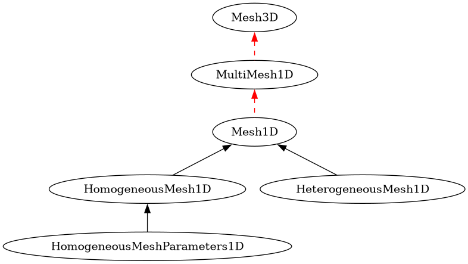

meshing package¶
Submodules¶
meshing.meshing module¶
This module handles the new meshing system.
Currently only designed for BFDTD simulations, i.e. for a final heterogeneous rectilinear grid. But it is completely independent of BFDTDobject or any other FDTD related code. VTK-related code will be added to it later eventually.
The class design is as follows:
Mesh3D: Consists of 3 MultiMesh1D, for the X, Y and Z directions.
MultiMesh1D: Contains a list of Mesh1D or MultiMesh1D objects.
Mesh1D: A generic parent class for 1D meshes.
HeterogeneousMesh1D: A heterogeneous mesh defined by its attribute coordinates.
HomogeneousMesh1D: A homogeneous mesh defined by its attributes pos_min, pos_max, spacing_max. spacing_max is used to determine the number of points/cells.
HomogeneousMeshParameters1D: A subclass of HomogeneousMesh1D, but for which the MultiMesh1D::getLocalCoordinates() function will take spacing_max into account to merge multiple HomogeneousMeshParameters1D in a smart way.

idea: Make various meshing algorithms available and allow user-created ones (ex: structure-specific meshing algorithms, tests of meshing on simulation results).
- class meshing.meshing.HeterogeneousMesh1D(coordinates=None)[source]¶
Bases:
Mesh1DVery basic class storing parameters for a heterogeneous 1D mesh.
- coordinates¶
list of the position of mesh lines. Type: List of floats. Default: [0, 1]
- class meshing.meshing.HomogeneousMesh1D(pos_min=None, pos_max=None, spacing_max=None)[source]¶
Bases:
Mesh1DClass storing parameters for a homogeneous 1D mesh.
This class uses spacing_max as main attribute instead of a given number of cells for more flexibility. This is useful when merging meshes (cf:
HomogeneousMeshParameters1D). But when a thickness or position list is requested, we simply switch to “N” as main, i.e. we create a homogeneous mesh.In general, for FDTD, we want:
spacing_max < F*lambda*1/n, withn=sqrt(epsilon_r).Since the factor F (usually around 1/15) and lambda are the only “geometry independent” settings, we bind them together into the resolutionScalingFactor.
So we use the remaining “geometry dependent” terms n (refractive index) and epsilon_r (relative permittivity) to define spacing_max.
Thus we define the following “terms” for use in this class and the meshing system:
refractive index n:
1/spacing_maxrelative permittivity epsilon_r:
(1/spacing_max)^2resolutionScalingFactor:
1/(F*lambda)(so that increasing it, decreases spacing_max and therefore increases NcellsMin)Minimum number of cells NcellsMin :
ceil( abs(pos_max-pos_min)/spacing_max )
spacing_max can then be set via:
setSpacingMax(spacing_max)
setRefractiveIndexMin(n)
setRelativePermittivityMin(epsilon_r)
setNcellsMin(NcellsMin)
Corresponding get functions are also available.
Note
resolutionScalingFactor is only used when getLocalCoordinates() is called!
- Parameters:
pos_min (float) – minimum position
pos_max (float) – maximum position
spacing_max (float) – maximum delta, i.e. cell thickness.
- getLocalCoordinates()[source]¶
Returns the list of coordinates. It takes into account Mesh1D::resolutionScalingFactor.
- getNcellsMin()[source]¶
get the minimum number of “cells” in the mesh (NOT the number of “positions”, which is
NcellsMin + 1)
- getRelativePermittivityMin()[source]¶
get the minimum “relative permittivity” defined as
(1/spacing_max)^2
- setNcellsMin(NcellsMin)[source]¶
set the minimum number of “cells” in the mesh (NOT the number of “positions”, which is
NcellsMin + 1)
- setRefractiveIndexMin(RefractiveIndexMin)[source]¶
set the minimum “refractive index” defined as
1/spacing_max
- class meshing.meshing.HomogeneousMeshParameters1D(pos_min=None, pos_max=None, spacing_max=None)[source]¶
Bases:
HomogeneousMesh1DA subclass of HomogeneousMesh1D, but for which the MultiMesh1D::getLocalCoordinates() function will take spacing_max into account to merge multiple HomogeneousMeshParameters1D in a smart way.
- class meshing.meshing.Mesh1D[source]¶
Bases:
objectGeneric parent class for 1D meshes. It is used for HeterogeneousMesh1D and HomogeneousMesh1D. Other mesh types like a logarithmic mesh for example, could be added later.
Subclasses must all re-implement the following functions:
getLocalCoordinates()
- Variables:
useForMeshing (bool) – If true, it will be used to create the final mesh. Default: True.
allowResolutionScaling (bool) – If true, changing the resolution settings to increase or decrease the number of cells will be allowed. Default: True.
resolutionScalingFactor (float) – Allows increasing or decreasing the number of total cells in the mesh (if the mesh class supports it). Default: 1.
- allowResolutionScaling¶
If true, changing the resolution settings to increase or decrease the number of cells will be allowed. Default: True.
- getBounds()[source]¶
Returns the minimum and maximum values of the coordinates in the form (pos_min, pos_max).
- getLocalCoordinates()[source]¶
Returns the list of coordinates. Must be re-implemented.
Note
Do not forget to take into account the Mesh1D attributes when implementing getLocalCoordinates().
- name¶
a name for easier debugging
- resolutionScalingFactor¶
Allows increasing or decreasing the number of total cells in the mesh (if the mesh class supports it). Default: 1.
- setAllowResolutionScaling(bool_value)[source]¶
Set the allowResolutionScaling attribute to bool_value.
- setResolutionScalingFactor(float_value)[source]¶
Set the resolutionScalingFactor attribute to float_value.
- useForMeshing¶
If true, it will be used to create the final mesh. Default: True.
- class meshing.meshing.Mesh3D[source]¶
Bases:
objectA rectilinear structured 3D mesh/grid.
- name¶
a name for easier debugging
- setAllowResolutionScaling(bool_value)[source]¶
Set the allowResolutionScaling attribute to bool_value for xmesh, ymesh and zmesh.
- setResolutionScalingFactor(float_value)[source]¶
Set the resolutionScalingFactor attribute to bool_value for xmesh, ymesh and zmesh.
- setUseForMeshing(bool_value)[source]¶
Set the useForMeshing attribute to bool_value for xmesh, ymesh and zmesh.
- xmesh¶
the 1D mesh in the X direction
- ymesh¶
the 1D mesh in the Y direction
- zmesh¶
the 1D mesh in the Z direction
- class meshing.meshing.MultiMesh1D[source]¶
Bases:
objectAn object consisting of multiple Mesh1D or MultiMesh1D objects.
The idea is to for example create one main mesh for the FDTD simulation consisiting of multiple submeshes for each FDTD object in the simulation. Each of these object submeshes can then also consist of multiple submeshes, again being either Mesh1D or MultiMesh1D.
getLocalCoordinates() will go through all those meshes recursively and return a single merged one.
The extension of that system to 3 or more or less dimensions is then straightforward and done via the Mesh3D class.
- getLocalCoordinates()[source]¶
Returns the list of merged and sorted coordinates from all submeshes.
Note
Meshes of type HomogeneousMesh1D are handled in a special way, in the sense that their spacing_max values are compared to choose the smallest one in case of overlap.
- getMesh1DList()[source]¶
Converts the submesh list into one containing only Mesh1D objects by iterating through the submeshes recursively.
- maximum_mesh_delta_ratio¶
For creating a smooth mesh. Neighboring cell sizes should not exceed a factor of maximum_mesh_delta_ratio. Default: 2. Set to
Noneto disable.
- maximum_mesh_delta_vacuum¶
If set, the mesh will be checked for any cells larger than
maximum_mesh_delta_vacuum * spacing_max(spacing_max set to 1 if the Mesh1D object does not provide it). Default: None. Set toNoneto disable.
- mesh_list¶
The list of Mesh1D or MultiMesh1D objects.
- minimum_mesh_delta¶
The minimum cell size allowed. This is used when merging the various submeshes. Default: 1e-3. Set to
Noneto disable.
- name¶
a name for easier debugging
- setAllowResolutionScaling(bool_value)[source]¶
Set the allowResolutionScaling attribute to bool_value for all submeshes.
- meshing.meshing.increaseResolution(mesh_orig, N)[source]¶
Increase the resolution of a mesh by dividing each cell into N equal cells. This means that a mesh with C cells and P = C+1 points will turn into a mesh with C’ = N*C cells and P’ = N*C+1 = P+(P-1)*(N-1) = P*N-(N-1) points.
- meshing.meshing.linspaces(part_limits, Ncells_per_part)[source]¶
Return evenly spaced numbers over specified intervals.
Example:
>>> linspaces([0,1,2,3,4], [2,3,4,5]) [0.0, 0.5, # 2 cells on [0,1] 1.0, 1.3333333333333333, 1.6666666666666665, # 3 cells on [1,2] 2.0, 2.25, 2.5, 2.75, # 4 cells on [2,3] 3.0, 3.2000000000000002, 3.3999999999999999, 3.6000000000000001, 3.7999999999999998, # 5 cells on [3,4] 4.0]
- meshing.meshing.mergeMeshingParameters(MeshParamsList, minimum_mesh_delta=0.001)[source]¶
Returns a mesh based on a list of MeshParams objects.
Original plan:
Return parameters that can be used for meshing with subGridMultiLayer.
Use in calculateMeshingParameters() function.
- meshing.meshing.subGridMultiLayer(Section_MaxDeltaVector_in=[1.76, 2.1385, 2.3535, 1], Section_ThicknessVector_in=[1, 0.5, 1, 1])[source]¶
Create a list of thicknesses for meshing
Usage:
[Mesh_ThicknessVector, Section_FinalDeltaVector] = subGridMultiLayer(Section_MaxDeltaVector_in, Section_ThicknessVector_in)
- Parameters:
Section_ThicknessVector_in – list of the thickness of each section
Section_MaxDeltaVector_in – list of maximum allowed deltas in each section
- Returns:
[Mesh_ThicknessVector, Section_FinalDeltaVector] where: * Mesh_ThicknessVector = thickness vector of the mesh * Section_FinalDeltaVector = list of final deltas used in the mesh
Example:
subGridMultiLayer([0.4,0.6,1], [2,3,5])
This would return:
Mesh_ThicknessVector = [ 0.4, 0.4, 0.4, 0.4, 0.4, 0.6, 0.6, 0.6, 0.6, 0.6, 1. , 1. , 1. , 1. , 1. ] Section_FinalDeltaVector = [ 0.4, 0.6, 1. ]
Note
If you are switching from the old to the new subGridMultiLayer version, replace the arguments as follows:
Section_MaxDeltaVector(new) = lambda(old)/16./indexVector(old)
Section_ThicknessVector(new) = thicknessVector(old)